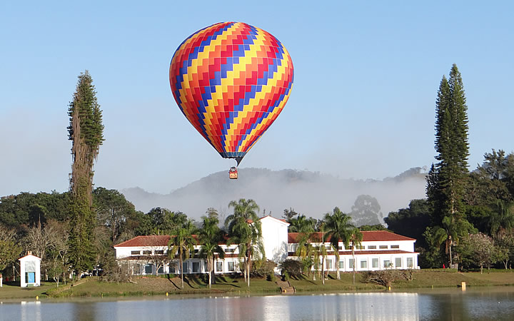

BLOG DO PEDRO
São Lourenço
postado em 20 de junho de 2022 São Lourenço é um município brasileiro do estado de Minas Gerais, uma das mais conhecidas estâncias hidrominerais do Brasil. Faz parte do Circuito das Águas de Minas Gerais, na Serra da Mantiqueira. Sua população em julho de 2020 foi estimada em 46 202 habitantes.
Rio de Janeiro
postado em 18 de junho de 2022
Rio de Janeiro (informalmente referido como Rio[7]) é um município brasileiro, capital do estado homônimo, situado no Sudeste do país. Maior destino turístico internacional no Brasil,[8] da América Latina e de todo o Hemisfério Sul (em 2008),[9] a capital fluminense é a cidade brasileira mais conhecida no exterior,[10] funcionando como um "espelho", ou "retrato" nacional, seja positiva ou negativamente. É a segunda maior metrópole do Brasil (depois de São Paulo), a sexta maior da América e a trigésima quinta do mundo. Sua população estimada pelo IBGE para 1.º de julho de 2021 era de 6 775 561 habitantes.[3] Tem o epíteto de Cidade Maravilhosa e aquele que nela nasce é chamado de carioca.
Postagens Recentes
Maceió é um município brasileiro, capital do estado de Alagoas, na Região Nordeste do país. Ocupa uma área de 509,5 km²,[3] estando distante 2 013 quilômetros de Brasília.[2] É o município mais populoso de Alagoas, e sua população em 2020, estimada pelo Instituto Brasileiro de Geografia e Estatística (IBGE), é de 1 025 360 habitantes,[7] sendo a décima quarta capital brasileira a ultrapassar a marca de um milhão de habitantes residentes, e a quinta do Nordeste. Integra, com outros dez municípios alagoanos, a Região Metropolitana de Maceió, totalizando cerca de 1,3 milhão de habitantes em 2015,[8] sendo o mais populoso de Alagoas, sendo o 6º maior do Nordeste e o 23º de todo o país.
Todos os direitos reservados - Blog do Pedro